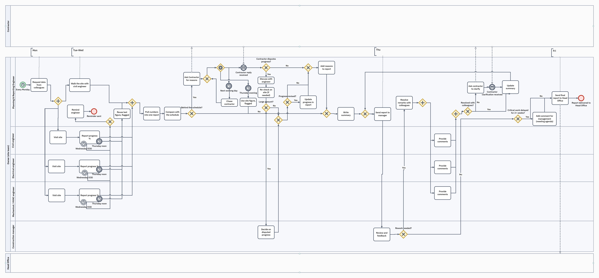

Learning BPM · NOVA IMS
Weekly progress report: AS-IS in BPMN
A process I know from my work as a Planning & Reporting Engineer on an industrial construction project, modelled from memory while studying Business Process Management. This model covers the reporting side of the role.
Open the interactive model ↗Opens in Quaera Flow, a free browser app for BPMN practice. Zoom, pan, click any element. Nothing to install; works best on a laptop or tablet.

Four parts, Monday to Friday
- 1 · Mon–WedProgress is collected in parallel: three discipline engineers and a site walk. Reminder on Wednesday, cut-off Thursday noon.
- 2 · Behind scheduleAsk the contractor for reasons; disputed numbers are discussed and re-checked on site.
- 3 · ThursdaySummary, review by the construction manager, remarks closed with colleagues first.
- 4 · FridayFinal report to head office; delays of 2+ weeks go on the management meeting agenda.
About the model
- BPMN 2.0, AS-IS: the process as it ran, including deadlines, fallback rules and exceptions.
- Drawn from memory. The employer is not named; labels are simplified.
- Next in the course: analysis, simulation and a TO-BE redesign.
- Files: model.png, weekly-report.flow.json (open in Quaera Flow with File → Open).